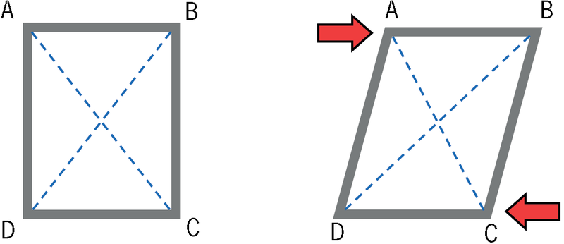

raamstrukture.Figuur 1: Interne aansig van ’n dakstruktuur
Figuur 2: Verskillende soorte kragmaste
Figuur 3: Verskillende soorte dakstrukture
soliede voorwerpe
wat uit slegs een deel
bestaan. Ander voorwerpe, soos bottels, potte en watertenks, is hol voorwerpe,
wat ook
doppe
genoem kan word. Ons maak ook voorwerpe wat uit verskillende
onderdele bestaan wat aanmekaargesit moet word, soos stoele, tafels en
brûe.
Hierdie voorwerpe word raamstrukture genoem en dit is belangrik om te
probeer
om raamstrukture sterk te maak.
Figuur 4
Druk met jou hand afwaarts op jou
kartondak. Wat gebeur?
Miskien is jou dakplate baie sterk
en sal hulle nie buig nie. Wat sal gebeur as ’n
paar groot mans op die dak gaan sit om die dakplate vas te maak?
Figuur 5
Kyk mooi na elkeen van die
sketse. Skryf ’n sin vir
elke skets neer om die metode wat gebruik word
om die dak te versterk of te
verspan
te beskryf.
Die woord “verspan” kom van
die Franse woord “bras” wat
“arm” beteken. Wanneer jy ’n
struktuur verspan plaas jy iets
soos ’n ekstra arm in om dit
sterker te maak
Figuur 6
Geval
A:
Geval
B:
Geval
C:
dakkappe
genoem
word. Stutte kan van hout of staal gemaak
word. Die verskillende dele van dakkappe
word
lede
genoem. Elke kap het ’n
vertikale deel in die middel. Dit word die
hoofstyl
genoem.
Figuur 7: Onvoltooide dakkappe
Watter deel van die dakkappe
voorkom dat hulle sywaarts van
mekaar weggly as die dakplate
op hulle gelaai word? Jy kan
antwoord deur dit op figuur 8 hier
regs aan te dui.
Figuur 8
spanbalk.
Figuur 9: Die geel spanbalk verkeer onder
spanning.
spanning
in
die spanbalk is, net soos wat daar
spanning in ’n tou is wat iemand
probeer om uit te rek.
drukkragte
genoem.daksparre
genoem.
Skryf die naam van elkeen
van die vier dele langs
die betrokke deel op die diagram hier regs neer.
Wanneer jy dit doen, sê ons dat jy
byskrifte
by die
diagram sit.
Figuur 10
Die daksparre kan buig as die wind teen die dak waai
of as ’n swaar las op die dak
geplaas word.
Figuur 11
Wat kan jy doen
om die
dakkappe te versterk sodat
die daksparre nie sal buig as
’n swaar las op hulle inwerk
nie? Maak hier ’n skets om
jou plan te wys.
stutsparre
om die daksparre
te ondersteun.
Figuur 12
drukkrag
genoem.Figuur 13: Drukkragte wat op
daksparre inwerk
’n Krag wat iets rek of uitmekaar trek, word ’n
trekkrag
genoem.
’n Krag wat iets saampers of papdruk word ’n
drukkrag
genoem.
Rol ’n
papiervel tot ’n buis en draai dit
dan op, soos die persoon in die foto die
handdoek opdraai. Deur dit te doen pas
jy ’n wringkrag op die papierbuis toe.
Figuur 14
Druk jou hande
styf teen mekaar soos in
hierdie foto gewys word. Vryf jou hande
teen mekaar.
Figuur 15
skuifkrag
genoem.
Figuur 16
Figuur 17
Sê in elke geval
watter kragtipes in die prent gedemonstreer word:
Figuur 18: Verskillende kragtipes
Sal hierdie dakstruktuur goed
werk?
Figuur 19
Beskryf wat verkeerd kan gaan as
dakplate of dakteëls op hierdie struktuur
geplaas sou word.
Dakkappe soos dié in die tekeninge hieronder word
hangstylkappe
genoem.
Die twee vertikale dele word hangstyle genoem. Hulle is beskadu in figuur 20.
Figuur 20
Figuur 21 is ’n tekening van ’n
ander tipe hangstyldakkap. Beskadu die
hangstylkap in die tekening.
Figuur 21
Merk al die dele in die tekening
hieronder wat onder drukkrag is met “D” en al
die dele wat onder spanning is met ’n “T”. Doen dit vir al die dele behalwe vir
die daksparre.
Figuur 22
Kyk na die prente hieronder en op
die volgende twee bladsye. Wat is die doel
van hierdie strukture? Hoekom word hulle opgerig?
Figuur 23
Waarom dink jy
is die kragmas
in figuur 24 op só manier
ontwerp en nie soos in figuur
25 nie?
Figuur 24
Figuur 25
Figuur 26
Figuur 27
Figuur 28
Figuur 29
Die maste in figure 26 en 28 is
soliede strukture wat van beton
gemaak is. Al die ander maste
is staalraamstrukture.
Wat dink jy word deur die groen dele van hierdie tekeninge aangedui?
Figuur 30: Die skeeftrek van ’n reghoekige raamwerk
’n Versterkingstuk wat
ingevoeg word om ’n
raamwerk te trianguleer kan
ook ’n
verspanbalk
genoem
word.
Wat gebeur met die lengtes van
lyne AC en BD as die raamwerk skeeftrek? Gaan
meet dit en vind uit.
trianguleer:
Figuur 31: Eenvoudige triangulasie van ’n raamwerk
Vergelyk wat gebeur as jy kragte soos in geval A en geval B
toepas.
Waarom behou die raamwerk sy
vorm in geval A, maar verander van vorm in
geval B? Wenk: Dink aan die soort kragte wat op die blou balk inwerk.
Hoe kan jy die ontwerp van die
raamwerk verbeter sodat kragte dit nie kan
skeeftrek nie?
Nog ’n manier om te voorkom dat ’n raamwerk
skeeftrek, is om dit twee keer te
trianguleer en sodoende ’n kruis te maak. Een verspanbalk gaan van die boonste
linkerkantse hoek van die vierhoek na die onderste regterkantste hoek van die
vierhoek. Die ander verspanbalk gaan van die boonste regterkantse hoek van die
vierhoek na die onderste linkerkantse hoek van die vierhoek.
Figuur 32: Kruisverspanning van ’n raamwerk
Dit word
kruisverspanning
genoem. Dit is ’n spesiale soort triangulasie. Met
kruisverspanning, soos in geval A en geval B, trek die raamwerk nie skeef as
kragte
toegepas word nie.
Vergelyk die raamwerkontwerp in
figuur 31 met die een in figuur 32.
Kan jy staalkabels in
plaas van balke vir die verspanning in beide hierdie
raamwerkontwerpe gebruik? Verduidelik jou antwoord.
Wanneer jy staalbalke vir
verspanning in beide raamwerkontwerpe gebruik,
moet jy dieselfde balkdiktes in beide ontwerpe gebruik of kan jy materiaal
bespaar en dunner balke in een van die ontwerpe gebruik?
Figuur 33: Skeeftrek
Figuur 34: Verdraaiing
Figuur 35: Interne kruisverspanning